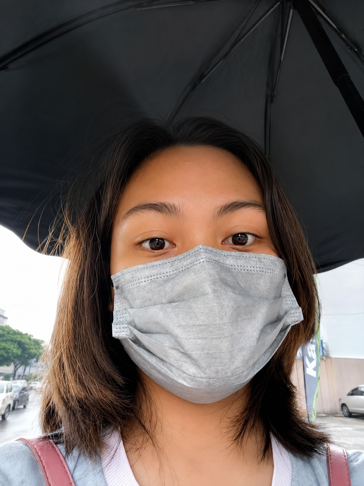

Hello, I'm
FRANCES MARGARETT.
BUILD. BREAK. LEARN. IMPROVE.
I turn ideas into practical systems and thoughtful digital interfaces using PHP, MySQL, HTML, CSS, JavaScript, and Figma.
FRANCES MARGARETT
Hi, I'm Frances.
A BSIT student focused on practical web development, database systems, UI design, and learning through real projects.

I learn by building.
I'm currently pursuing a Bachelor of Science in Information Technology at Bestlink College of the Philippines.
I became interested in creating systems that are not only functional but also understandable and enjoyable to use. I like taking an idea, breaking it into smaller problems, designing a solution, building it, debugging what doesn't work, and continuously improving the result.
Focus
Web Development
Database
MySQL Systems
Design
Figma & Prototyping
From Ideas to Working Systems.
The parts of development and design I enjoy most.
Building things is how I understand them.
I enjoy creating systems that solve real problems and make repetitive or complicated tasks easier to manage.
Building Practical Systems
Creating useful systems that make real workflows easier to manage.
Turning Ideas Into Interfaces
Using Figma to explore wireframes, prototypes, interaction, and interface structure.
Improving Through Iteration
Testing, finding problems, understanding what went wrong, and refining the result.
Web Development
I build practical web applications from front-end interfaces to back-end logic and database operations.
- PHP and MySQL development
- CRUD systems and database integration
- Form handling and file uploads
- Responsive front-end development
$system = [
"frontend" => ["HTML", "CSS", "JS"],
"backend" => "PHP",
"database" => "MySQL"
];Learn by Building
I learn best through experimentation and actual projects. Building something gives me a better understanding of how technologies work together.
- Build small working features
- Break and debug what fails
- Investigate root causes
- Apply lessons to the next iteration
UI / UX & Prototyping
I use Figma to turn concepts into interfaces, wireframes, prototypes, and interactive experiences before development.
- UI and layout design
- Wireframing and prototyping
- Interaction design
- Micro-interactions and interface states
My Technical Toolkit.
The technologies, practices, and tools I use while building and learning.
Web Development
Frontend + BackendDatabase
Data + IntegrationUI / UX & Design
Interface + PrototypingDevelopment Practices
Build + ImproveConstech Asia Corporation.
System Developer / Developer — practical experience building an internal management and inventory system.
Internal Management & Inventory System
Worked on a web-based internal system designed to manage products and related information digitally.
- Developed web-based system functionality
- Built product categories and subcategories
- Implemented product image uploading
- Connected front-end interfaces with the database
- Debugged system and database issues
- Worked on deployment and hosting
STATUS: PRACTICAL SYSTEM
ROLE: SYSTEM DEVELOPER
STACK: PHP + MYSQL
WORKFLOW: BUILD → DEBUG → DEPLOYThings I've Built.
Projects that helped me connect development, systems thinking, databases, and interface design.

Inventory / Management System
PHP + MySQLA web-based internal system for products, categories, subcategories, image uploads, database management, and administrative workflows.

Coffee Shop POS System
JavaA POS concept connecting product management, transaction processing, UI, application logic, and database integration.

Math Quiz Website
HTML + JSAn interactive math quiz focused on questions, user interaction, logic-based functionality, and responsive presentation.

Personal Portfolio
Figma + WebA portfolio designed to show how I think, design, build, and present my work rather than simply acting as an online résumé.
Exploring Interfaces.
Design work that lets me experiment with interaction, composition, and visual ideas.
Interactive Folder Interface
An interactive Figma concept exploring folder-based navigation, components, interface states, and micro-interactions.
Wabi-Sabi Interface
A visual exploration inspired by finding beauty in imperfection through intentionally imperfect layouts and interactions.
Prototype Thinking
Using wireframes and interactive prototypes to understand the experience before translating ideas into code.
Build → Debug → Improve.
A practical workflow I use to turn problems into working systems.
01 — Understand
Problem + RequirementsI first try to understand the problem, requirements, and people who will use the system.
02 — Plan
Break It DownI break the problem into smaller components and determine what needs to be designed and developed.
03 — Design
Structure + InterfaceI create the structure and interface, often using Figma to visualize the idea before development.
04 — Build
Make It FunctionalI turn the design and requirements into a functional system.
05 — Debug
Test + FixI test the system, identify problems, investigate what caused them, and fix them.
06 — Improve
Feedback + IterationI refine the system based on testing, feedback, and what I learn throughout the process.
Learning & Growing.
Bestlink College of the Philippines
Currently pursuing a Bachelor of Science in Information Technology.
- Web Development
- Database Systems
- Data Structures and Algorithms
- Software Testing
- Networking
- Integrative Programming
- System Development
- Human-Computer Interaction
NC II — Computer Systems Servicing
Issuing organization and date to be added.
CREDENTIAL 02Bookkeeping Certificate
Issuing organization and date to be added.
CREDENTIAL 03NC III Certificate
Previously obtained; currently expired. Certification details to be added.
Still Building My Toolkit.
Let's Build Something.
Have a project, idea, or problem that could use a digital solution? I'd love to hear about it.
Personal Approach
I don't want to simply know how to use a technology. I want to understand what I can create with it.